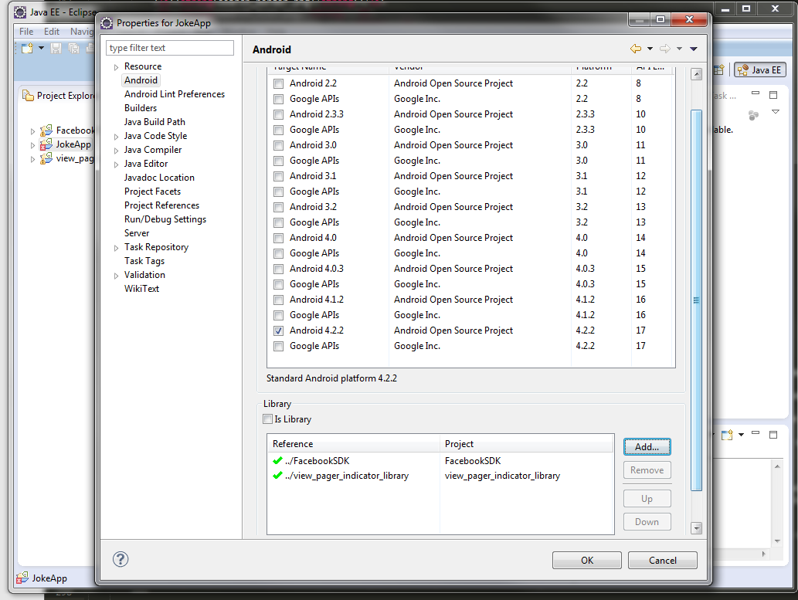

"Android Joke App" Documentation by "dmb TEAM" v1.0
"Android Joke App"
Created: 07.03.2014
By: dmb TEAM
Email: support@dmb-team.com
Thank you for purchae. If you have any questions that are beyond the scope of this help file, please feel free to email us via our user's page contact form here. Thanks so much!
Table of Contents
I. Project Contents
II. How to configure the available projects in your workspace
III. How to Customize "Joke App" for your Android Application
1. Java Sources - top
Package com.dmbteam.joke
- JokeApplicationContext.java - Application context.
- SplashScreenActivity.java - This is the first activity which will be started when the application is opened. It contains an image file to display to the users. The idea is to present your brand at start.
- MainActivity.java - This is the Main
Activityof the application showing the main page with all Posts in a single page.
Package com.dmbteam.joke.adapter
- AdapterAllJokes.java - Adapter for all Jokes.
Package com.dmbteam.joke.cmn
- Joke.java - This class represents a Joke object
Package com.dmbteam.joke.database
- DatabaseHelper.java - Helper class for database operations.
- DatabaseManager.java - This class is responsible for all database operations.
Package com.dmbteam.joke.fragment
- FraFont.java - Represents the content for font screen.
- FraFooter.java - Represents the content for footer part of the screen.
- FraHeader.java - Represents the header part of all screens.
- FraHomeContent.java - Represents the content for home screen.
- FraJokesListContent.java - Represents the jokes list content.
- FraMenu.java - Represents the content for menu screen.
- FraSearch.java - Represents the content for search screen.
- FraShare.java - Represents the content for share screen.
- FraSingleJokeContent.java - Represents the content for a single joke.
Package com.dmbteam.joke.network
- NetworkManager.java - This class is reponsible for all network operations.
Package com.dmbteam.joke.settings
- AppConstants.java - This class holds all application constants.
Package com.dmbteam.joke.share
- FacebookManager.java - This class contains all operations used for Facebook integration.
- MailManager.java - This class is responsible for the Mail functionality of the application.
- TwitterManager.java - This class contains all operations used for Twitter integration.
Package com.dmbteam.joke.util
- SortingManager.java - This class is responsible for all Sorting operations.
- Utils.java - Utility class.
Package com.dmbteam.joke.xml
- XmlManager.java - This class is responsible for all XML operations.
2. Resources - top
2.1. XML Files - top
Folder "layout"
- activity_main.xml - layout of the
MainActivity - fra_font.xml - layout of the font screen
- fra_footer.xml - layout of the footer
- fra_header.xml - layout of the header
- fra_home_content.xml - layout of the home page
- fra_jokes_list_content.xml - layout of the jokes list content
- fra_jokes_listview_item.xml - layout of the jokes listview item
- fra_main_pager_item.xml - layout of the main pager item
- fra_menu.xml - layout of the menu screen
- fra_search.xml - layout of the search screen
- fra_share.xml - layout of the share screen
- fra_single_joke_content.xml - layout of the single joke content
- fra_single_joke_pager_item.xml - layout of the single joke pager item
- splash.xml - layout of the splash screen
Folder "menu"
- main.xml - the menu in the Main Activity
Folder "assets"
- SHOWG.TTF - the application custom font
Folder "values"
- colors.xml - all the colors used in the application
- dimens.xml - all dimensions of the application
- strings.xml - all text values of the application
- styles.xml - all application styles
2.2. Drawables - top
The drawable files are placed according to the device resolution in the following folders: drawable, drawable-mdpi, drawable-ldpi, drawable-hdpi, drawable-xhdpi, drawable-land-mdpi, drawable-land-ldpi, drawable-land-hdpi, drawable-land-xhdpi. The drawable folder also contains composite shapes in .xml files that are not listed below.
- all_jokes_selector.xml
- email_selector.xml
- facebook_selector.xml
- favourite_jokes_selector.xml
- favourites_selector.xml
- font_home_selector.xml
- font_single_selector.xmln
- footer_gradient.xml
- header_gradient.xml
- latest_selector.xml
- most_read_selector.xml
- new_stuff_selector.xml
- overflow_selector.xml
- rate_app_selector.xml
- search_selector.xml
- search_icon_selector.xml
- share_app_selector.xml
- share_home_selector.xml
- share_single_selector.xml
- top_ten_selector.xml
- twitter_selector.xml
- twitter_icon.xml
- latestjokes.png
- twitter_img_off.png
- twitter_img_on.png
- ic_launcher.png
- alljokes_active.png
- alljokes.png
- arrow_left_home.png
- arrow_left.png
- arrow_right_home.png
- arrow_right.png
- arrow_white_image.png
- back.png
- buttons_back.png
- close.png
- face.png
- favourites_active_single.png
- favourites_added.png
- favourites_single_added.png
- favourites_single.png
- favourites.png
- favourites2_active.png
- favourites2.png
- font_active_single.png
- font_active.png
- font_single.png
- font_slider_button.png
- font.png
- header_action_active.png
- header_action.png
- header_logo_shadow.png
- header_logo.png
- header_search_active.png
- header_search.png
- latest_active.png
- latest.png
- line.png
- mail.png
- minus.png
- mostread_active.png
- mostread.png
- new_stuff_active.png
- newstuff.png
- plus.png
- rate.png
- search_back.png
- search_border.png
- search_icon.png
- share_active_single.png
- share_active.png
- share_single.png
- share.png
- slider_button_active.png
- slider_button.png
- slider_line_yellow.png
- slider_line.png
- splash.png.
- star_border.png
- star_filled.png
- subheader_back.png
- top10_active.png
- top10.png
- tweeter.png
- unread.png
- window_back.png
3. Others - top
- AndroidManifest.xml - the manifest of "Wordpress Ultimate App" application
- project.properties - properties of the "Wordpress Ultimate App" application
II. How to configure the available projects in your workspace
1. Import the project into Eclipse - top
Step 1: Extract the content within the Workspace_*.zip file. Start Eclipe and click on File > Switch Workspace > Other and locate the folder where you have extracted the zip file Workspace_*.zip and click OK.
Step 2: When you see the Eclipe's Welcome Screen click on File > Import > Android > Existing Android Code into Workspace and click on Next:
Step 3: On the next step you should locate where you extracted the Workspace_*.zip file by clicking the Browse button and then OK:
Step 4: When you click the OK button Eclipse will automatically detect the projects within this folder and will give you possibility to import them. Click Finish:
Step 5: Close the Welcome Screen and you will see on the left side the imported projects:
Step 6: Next step is to fix the libraries paths. For that purpose right click on JokeApp project and select Properties > Android and look at the Project Build Target, where you should be sure your target is set to Android 4.2.2. After the look at the Libraries section and remove all items by clicking on it and clicking on Remove button. Do this for all items within the Library section.
Step 7: After the removing please add the libraries with the correct paths by click on Add button. You should add them one by one: FacebookSDK, and view_pager_indicator:
Step 8: The final result should be the following:

Step 9: Click on OK and you are ready with the importing.
2. Support Library - top
- Install the latest version of the the Android Support Library for each project in the workspace.

3. Other Libraries - top
- Make sure your project has the following libraries on the build path:
- signpost-core-1.2.1.1.jar
- signpost-commonshttp4-1.2.1.1.jar
- ormlite-android-4.45
- ormlite-code-4.45.jar
- twitter4j-core.jar
- GoogleAdMobAdsSdk-6.4.1.jar
III. How to Customize "Joke App" for your Android Application
1. Jokes - top
To add Jokes in your own application do the following:
- Create a new XML file with the following structure and place it somewhere on the web. XML Example: http://dmb-team.com/assets/jokes.xml
- Element 'joke' - represents a single joke
- Sub-element 'id' - the identifier of the joke. It must be a sequential number
- Sub-Element 'author' - put the name of the joke's author here
- Sub-Element 'date' - put the date of the joke here
- Sub-Element 'jokeText' - put the text of the joke here
- Sub-Element 'newStuff' - when a joke has this element with value true, this joke will be displayed within the New Stuff tab. Example:
If you don't have jokes with the 'newStuff' sub-element you won't see jokes within the New Stuff tab, so it's good idea when you add new jokes to your xml file to add this sub-element to the newly added jokes - this way the users will always know, which are the new jokes. - Set the XML_URL value in class AppConstants.java with the URL of the XML you created in the previous step.
2. Splash Screen - top
To customize the Splash Screen for your own application do the following:
- Replace the splash.png file in folders drawable, drawable-xhdpi, drawable-hdpi, drawable-mdpi and drawable-ldpi with your own splash image.
3. Admob - top
To turn on Admob do the following:
- If you want to have ads in your home screen (the screen with the slider) you need to set the flag ENABLE_ADMOB_HOME_PAGE in class AppConstants.java to true. If you set it to false, you won't see ads on the home screen.
- If you want to have ads in your single joke screen (the screen that is displayed after you click some item from home screen) you need to set the flag ENABLE_ADMOB_SINGLE_NEW in class AppConstants.java to true.
- Set the ADMOB_REFRESH_INTERVAL value in class AppConstants.java with the number of seconds to refresh the advertisements. The default value is 60 seconds.
- Set the admob_id string property with your own admob id. This is very important and without setting it you will never see ads in your application. This string is located in the strings.xml file within the res/values/ folder.
4. Facebook - top
To generate hashkey for Facebook integration the do the following:
- Download 'openssl' from: http://code.google.com/p/openssl-for-windows/downloads/list.
- Make a new 'openssl' folder in drive 'C:'.
- Extract the downloaded .ZIP files into the 'openssl' folder.
- Copy the file 'debug.keystore' from '.android' folder (in my case C:\Users\SYSTEM\.android) and paste it into your JDK 'bin' folder (in my case C:\Program Files\Java\jdk1.6.0_05\bin).
- Open command prompt and type the path to the JDK 'bin' folder (in my case C:\Program Files\Java\jdk1.6.0_05\bin) and press ENTER.
- Type 'keytool -exportcert -alias androiddebugkey -keystore debug.keystore > c:\openssl\bin\debug.txt'.
- Now you will be asked to enter password. The password is 'android'. Type it and press ENTER.
- In the openssl 'bin' folder you will get a file with the name 'debug.txt'.
- Now either you can restart command prompt or work with existing command prompt.
- Type the path to 'C:' drive and then type the path of the openssl 'bin' folder and press ENTER.
- Type the command 'openssl sha1 -binary debug.txt > debug_sha.txt' and press ENTER
- You will get 'debug_sha.txt' file in the openssl 'bin' folder.
- Type the command 'openssl base64 -in debug_sha.txt > debug_base64.txt' and press ENTER.
- You will get a file 'debug_base64.txt' in the openssl 'bin' folder.
- Open the 'debug_base64.txt' file and there you can see your hashkey.
To create a Facebook APP of your own do the following:
- Go to the App Dashboard on the Facebook Developers site (https://developers.facebook.com/apps). Click 'Create New App', and enter basic information such as its name and a unique namespace.
- Once created, note down the app ID shown at the top of the dashboard page. You'll need to add this to your project files.
- Alternatively, you can, of course, use the ID of an existing app. In either case, you will also need to associate your Android keys hashes with the app. The key hash is used by Facebook as a security check for authenticity. By default, the app's package is signed with a machine specific debug key. When publishing the app it is typically signed with a different, release key. Therefore, you want to make sure you have the hashes of all the related keys set on Facebook: Click 'Edit App' and open up the 'Native Android App' section at the bottom of the dashboard. Add the debug hashkey that you obtained at the end of the previous step. Add also your Android app's package and activity names to the Android settings. Also enable 'Facebook Login'. If you have a release key, you will need to add its hash in the same way as explained for the debug key.
- Copy the APP_ID and paste it in 'strings.xml' file.


To customize the Facebook settings for your own application do the following:
- Set the ENABLE_FACEBOOK_SHARE flag in class AppConstants.java to true.
- Set the APP_PICTURE_LINK value in class AppConstants.java with the picture you want to be used when you share a post from your app.
5. Twitter - top
To customize the Twitter settings for your own application do the following:
- Follow this video tutorial on How to get a "consumer key" and "consumer secret": http://youtu.be/99_eGm7qyOk
- Set the consumer_key and consumer_secret values in file strings.xml with the ones you got from the previous step.
6. Other settings - top
There are some less important but useful settings in AppConstants.java file. Their usage is described in the file.
"Android Joke App" by dmb TEAM